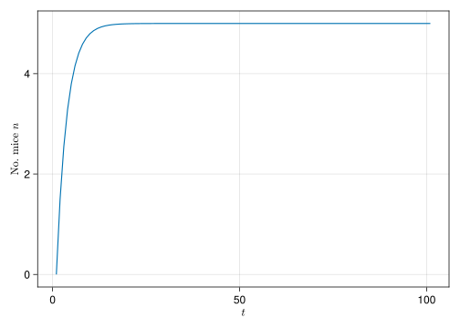
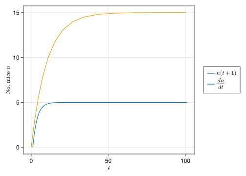

TikzPicture(L"""
\def\Radius{2cm}
\draw [ultra thick] (0cm,0cm) circle[radius=\Radius];
\draw[-{Latex[length=0.4cm, width=0.2cm]}] (\Radius, 0) arc(3:-3:\Radius) node[above left, label={[xshift=1.2cm, yshift=0.2cm]Predation}]{$n'$};
\draw[-{Latex[length=0.4cm, width=0.2cm]}] (0, \Radius) arc(90+3:90-3:\Radius) node[below, label={[xshift= -1.2cm]Census}]{$n$};
\draw[-{Latex[length=0.4cm, width=0.2cm]}] (-\Radius, 0) arc(180+3:180-3:\Radius) node[right, label={[xshift= -1.2cm, yshift = -1.0cm]Migration}]{$n'''$};
\draw[-{Latex[length=0.4cm, width=0.2cm]}] (0,-\Radius) arc(270+3:270-3:\Radius) node[above right, label={[xshift= 1.0cm, yshift = -0.85cm]Births}]{$n''$};
""", preamble = "\\usetikzlibrary{arrows.meta}"
)2. How to Construct a Model
Diagrams
One of the take-homes of this chapter is the importance of drawing a diagram of your mental model, before it becomes a mathematical model. The easiest way to draw a simple diagram is with pen/pencil and paper, but it’s useful to know how to produce flow diagrams and life cycles like the ones in the book with your computer. This is important for inclusion in publications, presentations theses etc., but also if you just tend to keep digital notes and/or want to produce diagrams programmatically such that they will automatically update as you adjust your model. To this end I will use Tikz, which is a drawing library written in/for LaTeX. Since Tikz is code based, there is a bit of a learning curve, and you may be served better by using a free drawing tool like Inkscape if building diagrams programmatically is not particularly desirable to you. However, for building reproducible documents like this one, code is king. And if you wish to produce PDF documents, writing your diagrams directly in LaTeX has significant advantages. Thankfully, there is an interface to Tikz from Julia via the package TikzPictures. So let’s use it to recreate the Figure 2.2b: the lifecycle diagram of the effect of a cat on the number of mice in a yard.
Life cycle diagrams
First, we need to draw a circle. We are going to define a variable called Radius to make it easier to locate certain positions on the circle where we want to place arrows. Then draw a thick lined circle of the specified radius, centred at location (0,0).
using TikzPictures
TikzPicture(L"""
\def\Radius{2cm}
\draw [ultra thick] (0cm,0cm) circle[radius=\Radius];
""")The L followed by 3 quotation marks means we are using a LaTeX String, this basically means we can write LaTeX code in Julia without worrying about \ string escapes etc. Next, we want to place an arrow on the right hand side of the circle. \draw[-latex] means we are drawing a line with and arrow at the end of the line (“latex” is the name of a specific type of arrowhead). Since the circle is centred at (0,0), the right hand side is at x,y coordinates (\Radius, 0), and because we want our arrow pointing along the direction of the circle, we want our line to be in an arc with radius Radius. Since it is conventional in maths to consider points on a circle starting from the far right and going around anti-clockwise, we will arc around from 3 to - 3.
TikzPicture(L"""
\def\Radius{2cm}
\draw [ultra thick] (0cm,0cm) circle[radius=\Radius];
\draw[-latex] (\Radius, 0) arc(3:-3:\Radius);
"""
)Oh dear, the arrow head is too small to make out against our ultra thick circle. Now in order to tweak the appearance of the arrow head we will use a library (bundled with Tikz) called arrows.meta which provides it’s own arrow head styles (typically the same names as base Tikz but with a capital first letter).
TikzPicture(L"""
\def\Radius{2cm}
\draw [ultra thick] (0cm,0cm) circle[radius=\Radius];
\draw[-{Latex[length=0.4cm, width=0.2cm]}] (\Radius, 0) arc(3:-3:\Radius);
""", preamble = "\\usetikzlibrary{arrows.meta}"
)Now we can add a node slightly above and to the left of the end of the arrow. Nodes are very important in Tikz. They can be used directly as labels, but they also define a specific spatial location which can be used as an anchor, allowing additional nodes and drawings to be defined relative to them. Here we place \(n''\) at our node location.
TikzPicture(L"""
\def\Radius{2cm}
\draw [ultra thick] (0cm,0cm) circle[radius=\Radius];
\draw[-{Latex[length=0.4cm, width=0.2cm]}] (\Radius, 0) arc(3:-3:\Radius) node[above left]{$n'$};
""", preamble = "\\usetikzlibrary{arrows.meta}"
)Additionally, we specify a label with an xshift and yshift (determined through trial and error).
TikzPicture(L"""
\def\Radius{2cm}
\draw [ultra thick] (0cm,0cm) circle[radius=\Radius];
\draw[-{Latex[length=0.4cm, width=0.2cm]}] (\Radius, 0) arc(3:-3:\Radius) node[above left, label={[xshift=1.2cm, yshift=0.2cm]Predation}]{$n'$};
""", preamble = "\\usetikzlibrary{arrows.meta}"
)And then do the same for each arrow and voila…
Flow diagrams
Let’s take a stab at the flow diagaram associated with the same model (Fig. 2.4b). For this it will be good to use the positioning library, and we’ll get more of a sense of using nodes as connecting points. In particular, we will start by making a circle node and naming it \(n\), then making a completely empty node called \(neighbours\). This empty node represents neighbouring areas from which other mice may migrate. rather than giving it’s location by x, y coordinates, we will specify it’s location relative to \(n\). Then, we can draw an arrow from one node to the other. For simplicity, we won’t mess around with arrow heads hear, and just use the default one.
TikzPicture(L"""
\node (n)[thick, circle, align = center, draw = black] at (0,0) { Number of \\ mice \\ $n(t)$};
\node[left = of n] (neighbours){};
\draw[thick, ->] (neighbours) -- (n);
""", preamble = "\\usetikzlibrary{positioning}"
)Okay, that’s step one. But this arrow coming in is pretty meaningless without a label. We can do this by adding a node along the path from neighbours to \(n\).
TikzPicture(L"""
\node (n)[thick, circle, align = center, draw = black] at (0,0) { Number of \\ mice \\ $n(t)$};
\node[left = of n] (neighbours){};
\draw[thick, ->] (neighbours) -- (n);
\draw[thick, ->] (neighbours) -- node[above]{$m$} ++ (n);
""", preamble = "\\usetikzlibrary{positioning}"
)Alright, that’s migration sorted. Now we can do the same for predation. I’ll use a skull from the skull library, though it doesn’t look nearly as good as the one from the book. I’ll also specify that the label should be sloped i.e., it will follow the angle of the path from \(n\) to the skull. They don’t do this in the book, but it’s a nice feature to demonstrate.
TikzPicture(L"""
\node (n)[thick, circle, align = center, draw = black] at (0,0) { Number of \\ mice \\ $n(t)$};
\node[left = of n] (neighbours){};
\node[below right = of n] (d) {$\skull$};
\draw[thick, ->] (neighbours) -- node[above]{$m$} ++ (n);
\draw[thick, ->] (n) -- node[sloped,above]{$d \, n(t)$} ++ (d);
""", preamble = "\\usepackage{skull} \n \\usetikzlibrary{positioning}"
)Finally, the loop from \(n\) back to itself, representing births
TikzPicture(L"""
\node (n)[thick, circle, align = center, draw = black] at (0,0) { Number of \\ mice \\ $n(t)$};
\node[left = of n] (neighbours){};
\node[below right = of n] (d) {$\skull$};
\draw[thick, ->] (neighbours) -- node[above]{$m$} ++ (n);
\draw[thick, ->] (n) -- node[sloped,above]{$d \, n(t)$} ++ (d);
\path [thick, ->] (n) edge [loop above] node[above] {$b \, n'(t)$} (n);
""", preamble = "\\usepackage{skull} \n \\usetikzlibrary{positioning}"
)We can fine tune the positioning of the loop to try and match the book. Again, we work with degrees anti-clockwise from the right hand side.
TikzPicture(L"""
\node (n)[thick, circle, align = center, draw = black] at (0,0) { Number of \\ mice \\ $n(t)$};
\node[left = of n] (neighbours){};
\node[below right = of n] (d) {$\skull$};
\draw[thick, ->] (neighbours) -- node[above]{$m$} ++ (n);
\draw[thick, ->] (n) -- node[sloped,above]{$d \, n(t)$} ++ (d);
\draw [thick, ->] (n) edge [out=60,in=30,looseness=4] node[below right,label={[xshift=0.4cm, yshift=-0.9cm]$b \, n'(t)$}] {} (n);
""", preamble = "\\usepackage{skull} \n \\usetikzlibrary{positioning}"
)\documentclass{standalone}
\usepackage{skull}
\usepackage{tikz}
\usetikzlibrary{positioning}
\begin{document}
\begin{tikzpicture}
\node (n)[thick, circle, align = center, draw = black] at (0,0) { Number of \\ mice \\ $n(t)$};
\node[left = of n] (neighbours){};
\node[below right = of n] (d) {$\skull$};
\draw[thick, ->] (neighbours) -- node[above]{$m$} ++ (n);
\draw[thick, ->] (n) -- node[sloped,above]{$d \, n(t)$} ++ (d);
\draw [thick, ->] (n) edge [out=60,in=30,looseness=4] node[below right,label={[xshift=0.4cm, yshift=-0.9cm]$b \, n'(t)$}] {} (n);
\end{tikzpicture}
\end{document}Below we can see how to draw the curved dashed line seen in the flow diagram of the flu model.
TikzPicture(L"""
\node (s)[thick, circle, minimum size=2.4cm, align = center, draw = black] at (0,0) {People \\ without flu \\ $s(t)$};
\node (midway)[label={[xshift= 1.0cm, yshift=-0.8cm]$a \, c \, s(t) \, n(t)$}] at (2.5cm,0cm) {};
\node (n)[ thick, circle, minimum size=2.4cm, align = center, draw = black] at (6cm,0cm) {People \\ with flu \\ $n(t)$};
\draw[thick, ->] (s) -- (n);
\path [->,draw,thick, dashed] (n) to[out=90,in=150, distance=2cm] (midway);
""", preamble = "\\usetikzlibrary{positioning}"
)\documentclass{standalone}
\usepackage{tikz}
\usetikzlibrary{positioning}
\begin{document}
\begin{tikzpicture}
\node (s)[thick, circle, minimum size=2.4cm, align = center, draw = black] at (0,0) {People \\ without flu \\ $s(t)$};
\node (midway)[label={[xshift= 1.0cm, yshift=-0.8cm]$a \, c \, s(t) \, n(t)$}] at (2.5cm,0cm) {};
\node (n)[ thick, circle, minimum size=2.4cm, align = center, draw = black] at (6cm,0cm) {People \\ with flu \\ $n(t)$};
\draw[thick, ->] (s) -- (n);
\path [->,draw,thick, dashed] (n) to[out=90,in=150, distance=2cm] (midway);
\end{tikzpicture}
\end{document}Dynamical models
Taking the mouse population dynamics example from the book, we will take a look at how you might derive and solve both recursion and differential equations, without having to do any of the maths by hand. We will manipulate symbolic equations using Symbolics, numerically solve differential equations using DifferentialEquations and do a bit of both with ModelingToolkit. All three packages are developed and maintained by the SciML (Scientific Machine Learning) organisation.
using Symbolics, CairoMakieSymbolics has a long way to go, to catch up with SymPy (which is itself no match for Mathematica) in terms of available features. Thus, it’s definitely not the best choice for a purely symbolic workflow. However, if you need to mix in a some basic symbolic programming alongside your numerical work, it is very handy. In particular, we will see two different ways to build solvable differential equation problems from symbolic expressions.
Discrete-time Recursion Equations
Here, we will use the Symbolis’s @variables macro to define some symbolic variables to work with.
@variables b d m t nₜ\[ \begin{equation} \left[ \begin{array}{c} b \\ d \\ m \\ t \\ n_t \\ \end{array} \right] \end{equation} \]
Plugging in the equations for births, deaths and migration, we arrive at our recursion equation.
n′ = nₜ*(1+b)
n′′ = n′*(1-d)
n′′′ = n′′+m
nₜ₊₁ = n′′′\[ \begin{equation} m + n_t \left( 1 + b \right) \left( 1 - d \right) \end{equation} \]
Now we can use the build_function erm function, to build a function that takes in \(n(t)\) and our parameter values, and returns \(n(t+1)\). To do this we call build_function on the expression we want to turn into a function, followed by the arguments we will be passing to our built function, in order. This generates some code. But we need to evaluate the code, in order to make a callable function.
recursion = eval(build_function(nₜ₊₁, b, d, m, nₜ))Next we want to find the solution over some given time span, for particular parameter values. There are methods for solving recursion and difference equations included in DifferentialEquations, but for this simple case we can just use a loop.
function mice_recursion(b, d, m, nₜ, t_max)
n_step = t_max + 1
res = Vector{Float64}(undef,n_step)
res[1] = nₜ
for step in 2:n_step
res[step] = recursion(b, d, m, res[step - 1])
end
res
endLet’s assume there are no mice at the start, but migration is high and the death rate is slightly above the birth rate.
fig,ax,rec_plt = lines(mice_recursion(0.4, 0.5, 1.5, 0.0, 100))
ax.ylabel = L"No. mice $n$"
ax.xlabel = L"t"
fig
Continuous-time Differential Equations
using DifferentialEquationsFollowing Box 2.6 from the book, we can derive a differential equation by finding the change in \(n\) over the time period \(\Delta t\) in the limit as \(\Delta\) goes to zero. First, we express the dynamics explicitly including \(\Delta t\), the time change over a single time-step.
@variables Δt
n′ = nₜ*(1+b*Δt)
n′′ = n′*(1-d*Δt)
n′′′ = n′′+m*Δt\[ \begin{equation} m {\Delta}t + n_t \left( 1 + b {\Delta}t \right) \left( 1 - d {\Delta}t \right) \end{equation} \]
Then we use the definition of a derivative (equation 2.6.2 from the book) to convert the recursion into a differential equation
\[ \frac{dn(t)}{dt} \equiv \text{lim}_{\Delta t \rightarrow 0}\left[\frac{n(t + \Delta t) - n(t)}{\Delta t} \right] \]
eq = (n′′′ - nₜ)/Δt \[ \begin{equation} \frac{ - n_t + m {\Delta}t + n_t \left( 1 + b {\Delta}t \right) \left( 1 - d {\Delta}t \right)}{{\Delta}t} \end{equation} \]
simp_eq = simplify(eq)\[ \begin{equation} m + b n_t - d n_t - b d n_t {\Delta}t \end{equation} \]
After simplifying, there re no divisions by \(\Delta t\). So we can proceed by setting \(\Delta t = 0\).
diff_eq = substitute(simp_eq, Δt => 0)\[ \begin{equation} m + b n_t - d n_t \end{equation} \]
Again, we will build a numerical function from the symbolic expression.
diff_eq_func = eval(build_function(diff_eq, b, d, m, nₜ))Differential Equations from Numerical Functions
Using the DifferentialEquations package, we set up an ODE function which accepts 4 arguments for which the canonical names are du (a vector, containing the current trajectories of all variables), u ( the current values of all variables), p (the parameters), t (the current time). I will tend to use capital P in place of p, since we often use a lower-case p for frequency based variables. Within the body of the function, we assign new values to each element in du according to our governing equations. Here, since we already have a function diff_eq_func which determines the dynamics of the mouse population, I will just use that directly within the ODE function. To pass in the parameter values we will use the ... “splat” notation, which passes in each element of P as an individua argument, rather than as a single vector of parameters.
Specifically, this is the in-place functional form
f(du, u, p, t) as opposed to *out-of-place f(u, p, t). In the latter case f would return du rather than modify it.function mice(du, u, P, t)
du[1] = diff_eq_func(P..., u[1])
endSo in order to solve the ODE we need to create an ODEProblem for our given function, starting values for variables (u0), time span, and parameter values.
u₀ = [0.0]
t_span = (0.0,100.0)
P = [0.4, 0.5, 1.5]
prob = ODEProblem(mice, u₀, t_span, P)ODEProblem with uType Vector{Float64} and tType Float64. In-place: true timespan: (0.0, 100.0) u0: 1-element Vector{Float64}: 0.0
There is a plotting recipe for differential equation solutions provided by the the popular plotting package Plots, which allows you to get a plot by calling plot(sol). Here we will use Makie and build the plot “manually” by extracting the time t and dependent variable values u from the solution object.
sol = solve(prob)
diff_plt = lines!(ax, sol.t,vcat(sol.u...))
Legend(fig[1, 2],
[rec_plt, rec_plt],
[L"n(t+1)", L"\frac{dn}{dt}"])
fig
Differential Equations from Symbolic Expressions
using ModelingToolkitAnther approach to working with differential equation models in Julia is using ModelingToolkit which mixes symbolic and numeric computing by allowing the user to specify a high-level description of their model, which is then manipulated to produce optimised simulation code. Up till now we’ve just been referring to all symbols as variables but in order to work with ModellingToolkit we will need to be more precise in our terminology, separating variables from parameters and explicitly defining \(n\) as a function of \(t\). We will also use the syntax D = Differential(t) to set up derivatives(s) w.r.t \(t\)
@variables t n(t)
@parameters b d m Δt
D = Differential(t)Then we use identical code to that above, to get to diff_eq
n′ = n*(1+b*Δt)
n′′ = n′*(1-d*Δt)
n′′′ = n′′+m*Δt
eq = (n′′′ - n)/Δt
simp_eq = simplify(eq)
diff_eq = substitute(simp_eq, Δt => 0)\[ \begin{equation} m + b n\left( t \right) - d n\left( t \right) \end{equation} \]
The nice thing here, is that even though we use n not n(t) in our code, Symbolics remembers that \(n\) is a function of \(t\).
Remember D = Differential(t), thus we can use D(n) when setting up a differential equation for the dependent variable \(n\) w.r.t. the independent variable \(t\).
@named mice_mtk = ODESystem(D(n) ~ diff_eq)\[ \begin{align} \frac{\mathrm{d} n\left( t \right)}{\mathrm{d}t} =& m + b n\left( t \right) - d n\left( t \right) \end{align} \]
Note the name ODESystem. Here we have a single differential equation, but we could equally have supplied a vector of equations. Likewise, we could have written the equation explicitly D(n) ~ m + b*n - d*n. Another difference between the ModelingToolkit and DifferentialEquations workflow is that we will now be specifying parameter values and initial values for variables as vectors of Pairs where each symbol is assigned a numerical value.
u₀ = [n => 0.0]
t_span = (0.0,100.0)
P = [b => 0.4, d => 0.5, m => 1.5]
prob_mtk = ODEProblem(mice_mtk, u₀, t_span, P)ODEProblem with uType Vector{Float64} and tType Float64. In-place: true timespan: (0.0, 100.0) u0: 1-element Vector{Float64}: 0.0
As a final note, the ModelingToolkit version is a bit faster…
using BenchmarkTools
@btime solve(prob); 66.400 μs (976 allocations: 31.92 KiB)@btime solve(prob_mtk); 36.400 μs (273 allocations: 25.28 KiB)